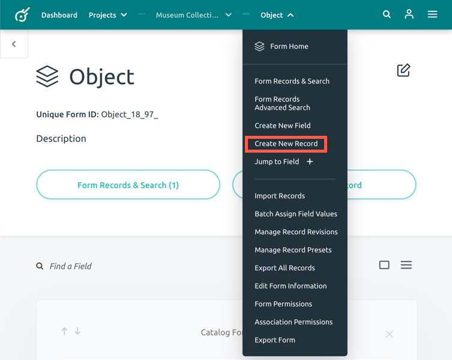

Creating a Record
A record is the metadata element. A record is generated by entering information into fields within a form.
Follow the steps below to create a record.
First, open your current project (You can find the list of your projects by clicking on the Projects button on the top menu). Choose the form you would like to enter a record for by clicking on the form name.
-
To create a record, you can either click the Create New Record button or you can click the form name in the menu bar to open the dropdown and choose the Create New Record option.


-
This will open a New Record page.
-
Now you can fill out the fields within the form with your data. You will need to fill out all the fields with green dot next to it, as they are a required field.
If your form has multiple pages, you can toggle between them using the buttons Previous Page and Next Page at the bottom of the screen. -
When you are finished entering the information for the record, click Create New Record.
Additional Information
Using a Record Preset
If you would like to use a record preset, click the circle to the left of the Use a Record Preset option. This will provide a new dropdown option to select your record preset option. Record presets are useful to use when you have similar records in a form. You are able to edit the record after the preset is selected.
Duplicate Record
If you chose to duplicate your record, an identical copy of the record will be created. You can set the number of duplicates after selecting the option.
If you need to duplicate a record after it has been created, view your form records. Choose the record you would like to duplicate and choose the Duplicate Records option. This will bring you to the Duplicate Record page, select the duplication amount (max 1000), then click the Dupliciate Record buttom at the bottom of the page.
If you need assistence on how to edit your duplicate record, visit the Editing a Record guide.
Creating a New Record Preset
If you wish to use this record as a preset option for future records, click Create New Record Preset from this Record option. You will be asked to name your new record preset.